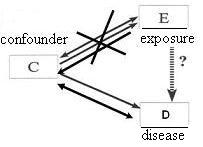

Matching
Lead Author(s): Jeff Martin, MD
Definition of Matching
Definition of Matching:
- Match unexposed or non-case subjects to those of the comparison group (either exposed or cases) in terms of the confounder in question.
Matching is another method that can be used in the design phase to reduce confounding.
- It is a very complex topic.
- What we do in matching is to choose subjects (either unexposed persons in cohort designs or non-cases in case-control studies)
- who match those of the comparison group (either the exposed or the cases) in terms of the potential confounding factor in question.
Matching to Reduce Confounding - Cohort Study
In the following DAG, you see that in a Cohort Study
Matching results in prohibiting any association between the exposure and the confounder. 
For example, in a cohort study, if we were concerned about race as a confounder, you might match on race.
- For each white exposed person, you would choose one white unexposed person.
- For each Asian exposed person, you would choose one Asian unexposed.
Matching to Reduce Confounding - Case-Control Study
In the following DAG, you see that in a Case Control Study
Matching precludes any association between the disease and the confounder.
In a case-control study, if, for example, we performed a study of, say, diet and cancer and were worried about age as a potential confounder, we might match on age.
- For each case who was 50 years old, we would choose one control who was 50 years old.
- For each 70 year old case, we would select one 70 year old control.
Advantages of Matching
1. Best way to manage or prevent certain confounding variables, such as neighborhood
- factors which would be nearly impossible to manage in analysis phase.
2. By ensuring a balanced number of cases and controls (in a case-control study) or exposed/unexposed (in a cohort study ) within the various strata of the confounding variable,
Matching brings you increased statistical precision in your inferences (i.e., smaller standard errors and narrower confidence intervals).
- This is because matching works towards achieving a balanced number of cases and controls, in the context of a case-control study, or exposed/unexposed in a cohort study within the various strata of the confounder.
- This balance means tighter precision.
Example of Matching by Neighborhood
Here is an example of matching by neighborhood in a case-control study of the effect of a bacille Calmette-Guerin (BCG) vaccine in preventing tuberculosis (TB) (Dantas)
- Cases: newly diagnosed TB in Brazil
- Controls: persons without TB
- Exposure: receipt of a BCG vaccine
- Potential confounder: neighborhood (village) of residence;
- related to ambient TB incidence and practices regarding BCG vaccine
Control sampling: Relying upon random sampling without attention to neighborhood may result in choosing no controls from some of the neighborhoods (especially in a small study) seen in the case group (i.e., cases and controls lack overlap)
- Matching on neighborhood ensures overlap
In this example the investigators examined the effect of a second BCG vaccine in preventing the occurrence of TB.
- In this study, cases were defined as persons with newly diagnosed tuberculosis.
- Controls were individuals without TB. The principal exposure under study was receipt of a second BCG vaccination.
- Here, a potential confounder is neighborhood of residence.
- This is because neighborhood is associated with risk for TB and it is also associated with local practices as to whether second vaccination is routinely given.
Example of Matching in San Francisco
Think of all the neighborhoods in San Francisco.
Neighborhood is a nominal variable with multiple values;
If one had to rely upon random sampling of controls, you might end up choosing no controls from some of the neighborhoods seen in the case group. This is especially true in a small study.
- If you have persons in the case group for whom there are no persons in the control group with the same value of the neighborhood, you are not going to be able to use any adjustment techniques to adjust for this confounder in the analysis phase.
- If you have persons in the case group for whom there are no persons in the control group with the same value of the neighborhood, you are not going to be able to use any adjustment techniques to adjust for this confounder in the analysis phase.
- In other words, the cases and controls will lack complete overlap.
By matching on neighborhood (diagram below),
- you are assured that for every case with a given neighborhood there will be at least one control with the same neighborhood.
Example of Matching for Precision
Here is an example of the advantage of matching to improve precision.
If one performs a case-control study and randomly samples controls from the community, you'll get the following (below - A): a crude or unadjusted odds ratio of 8.8 looking at the association between matches and lung cancer.
- After adjustment for smoking, the two smoking-specific stratum now feature OR's of 1.0.
- When we pool these 2 strata, we get on OR of 1.0 with the CI of 0.31 to 3.2.
But what if we instead matched on smoking when we sampled the controls.
- Again, we can choose the controls from the population at large but for every lung cancer case that is a smoker we take a control that is a smoker.
- For every lung cancer case that is a non-smoker, we take a control that is not a smoker.
We end up with better balance in the smoking strata (see below - B).
- Notice, in the smokers, we see 90 cases and 90 controls, in the non-smokers, we see 10 cases and 10 controls.
- When we pool the 2 stratum specific OR's to get the overall adjusted OR, we get the same point estimate as when we sampled controls randomly from the population, but now notice that the CI is narrower (0.40 to 2.5), ie increased statistical precision, even though the overall sample size is the same.
- This is all because better balance has been achieved in the comparisons: 90 cases vs 90 controls in this stratum and 10 vs 10 in this stratum.
- This is the point that few realize about matching; it improves statistical precision.
There exist examples where the benefit of matching in terms of precision is greater than the example shown here.
Disadvantages of Matching
1. Finding appropriate matches may be difficult and expensive.
- Therefore, the gains in statistical efficiency can be offset by losses in overall efficiency.
First of all, it may be time-consuming to sift through many individual records to find appropriate matches. As long as you believe you will have overlap in key potential confounders and are not dealing with a complex nominal variable, the inefficiencies of having to find matches may outweigh the benefits gained in statistical precision.
2. In a case-control study, a factor used to match subjects cannot be itself evaluated as a risk factor for the disease.
- In general, matching decreases robustness of study to address secondary questions.
Second, in a case-control study, because you have artificially precluded any association between the potential confounder and the outcome, you cannot directly assess in this study whether this factor is indeed related to the outcome. This illustrates how matching in general works toward reducing the robustness of a study for secondary research questions.
3. Decisions are irrevocable -
Third, the decisions you make about matching are irrevocable. For example, say you matched upon an intermediary variable, then you have likely lost the ability to look for an effect of your exposure through that pathway.
- An example of this is if you were studying the effect of sexual activity on cervical cancer. If you happened to match on HPV status, you would have precluded your ability to detect an effect of sexual activity and there would be no ability to undo this. In other words, you cannot undo matching that has already occurred.
4. If potential confounding factor really is not a confounder,
- statistical precision can be worse than no matching.
Fourth, if the variable you are concerned about producing confounding really is not a confounder, you will actually suffer losses, not gains, in statistical precision compared to the situation where you did not match. Suffice it to say, that the heyday for matching was clearly in the past before the advent of newer mathematical regression modeling techniques and the computers to run them.
Disadvantages can sometimes outweigh advantages in matching. ALWAYS Think carefully before you match and seek advice!
References
Dantas, O. M., Ximenes, R. A., de Albuquerque Mde, F., da Silva, N. L., Montarroyos, U. R., de Souza, W. V., et al. (2006). A case-control study of protection against tuberculosis by BCG revaccination in Recife, Brazil. Int J Tuberc Lung Dis, 10(5), 536-541.